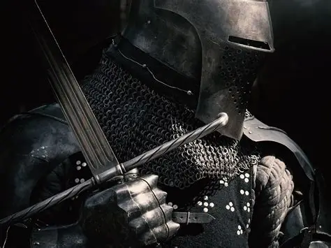

The palace halls are a storm of clashing steel. Your soldiers fall around you, but the throne remains within reach.
Act I

The palace halls are a storm of clashing steel. Your soldiers fall around you, but the throne remains within reach.